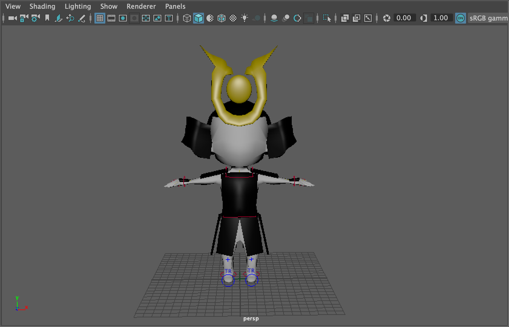
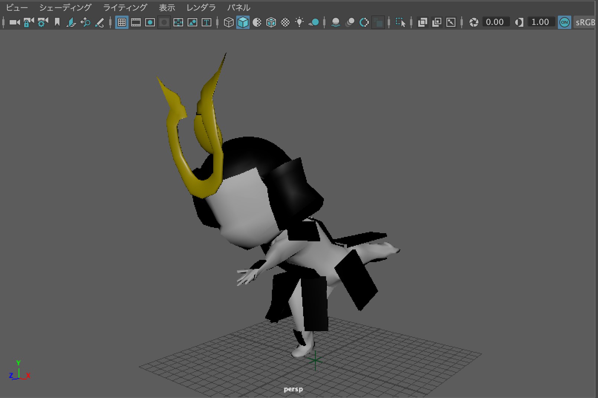
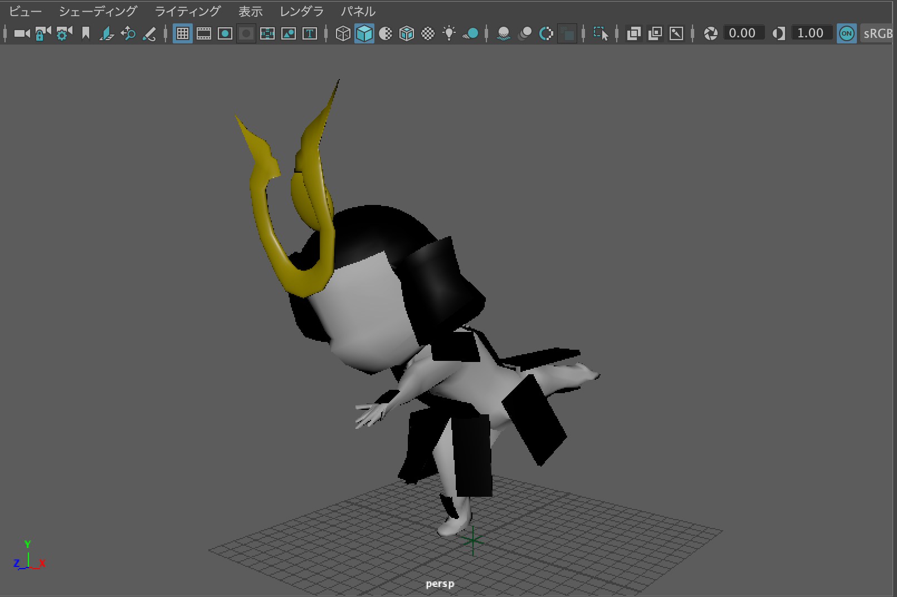
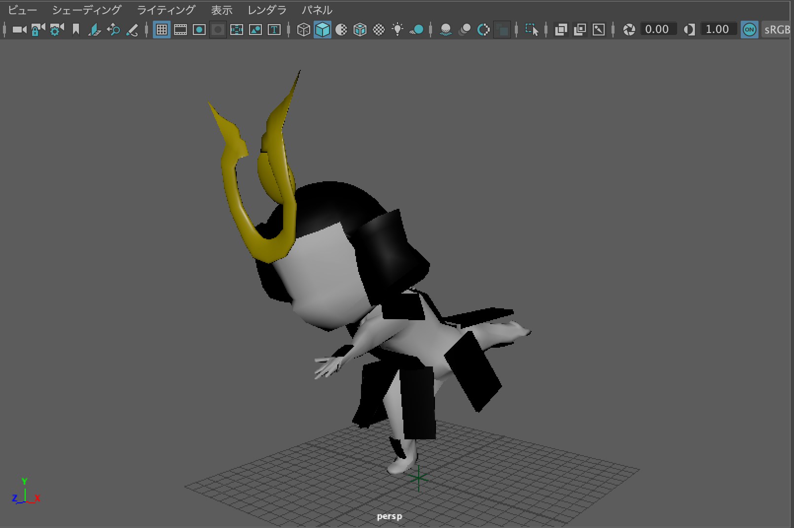
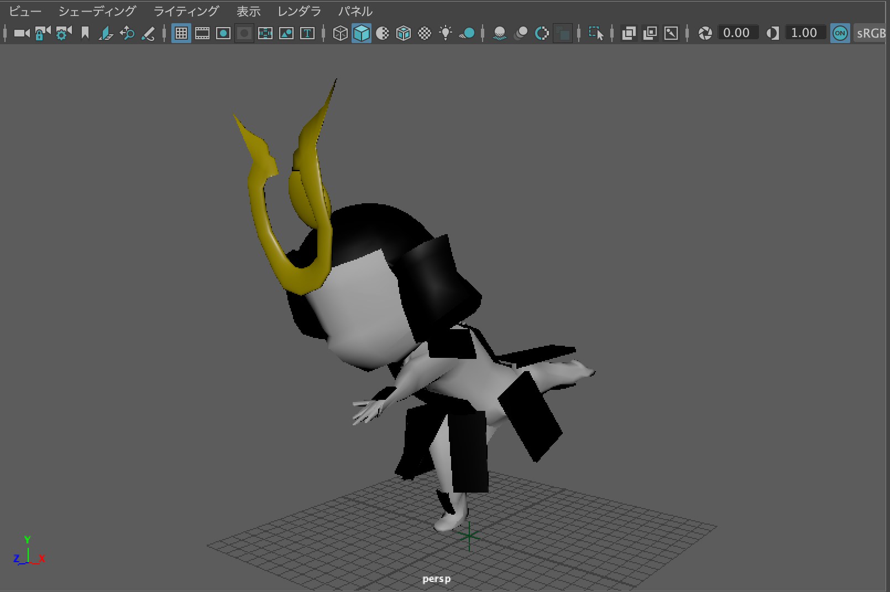
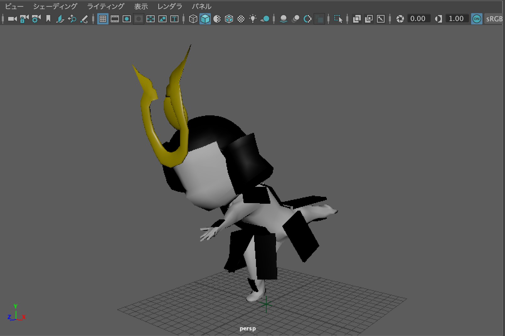

Human
人間の形をしたモデルの作成をしました。
自身の好きな「武将」をテーマに作成してみた作品です。

作成詳細
使用ソフト：Autodesk Maya
制作時間：約4時間
人型のモデル作成自体に多くの時間が取られてしまったのはもちろんのこと、ポージングなどにも時間が取られてしまったことがとても惜しい
全体的なクオリティを含めて全体的に技術の向上に意欲がむく作品となった。
Details

 


